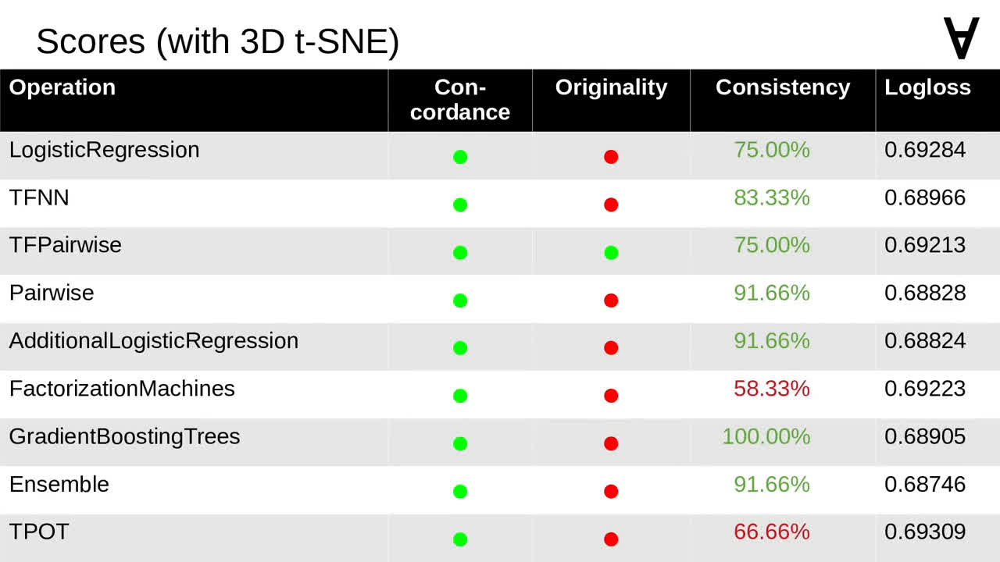
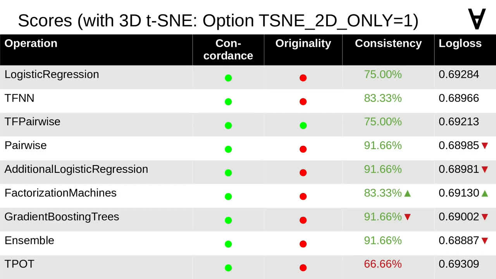

Numerai & ML - Part 4 - Jim Fleming's models
In my search for inspiration I came across a post of Jim Fleming on Medium. In his generosity, he shared his insight and the code he used to make predictions for Numerai.
Since he wrote it for one of the early tournaments, I needed to update the code to the new input data format and make sure the predictions fall into an open interval from zero to one.
I also updated the calls to the deprecated TensorFlow and scikit-learn functions.
I collected all the modules the code required and wrapped it into a Docker container (mind that the Dockerfile is heavily abridged here).
Just like in previous cases I made sure I can pass some parameters when launching the Docker container.
Here is the command to use to launch the container. Since the code makes use of multiple different models the OPERATION parameter allows to pick one of them.
Now let's have a closer look at how it's organized internally. As mentioned, the code uses multiple models.
The input data for the models is prepared by applying a method called "adversarial validation" (you can have a look at the original post for details).
There are also additional features added to the input data by applying a dimensionality reduction method called t-SNE.
Finally, after passing the data through selected models, the predictions are combined through a method called ensembling.
That last step was one of the more interesting things I learned from that post. And you can also learn more if you follow this link.
In conclusion of his post Jim mentions the use of four models in an ensemble. However, one of them (using Gradient Boosted Trees) was missing from the code he shared on GitHub.
Following the limited description, I added it back.
One interesting thing mentioned in the post was TPOT. This is an automated machine learning framework (using Genetic Algorithms) somewhat related in the spirit to Auto-WEKA and auto-sklearn covered in the previous part. I completed the unfinished code to make use of it as well.
One of the observations I made was that earlier the features had uniform distributions
but currently the distributions were Gaussian.
Since among the models there are ones using neural networks I decided to normalize the features using StandardScaler instead of MinMaxScaler (though I realize that choice may be misguided).
I also noticed that currently there appears to be less correlation between features.
This is perhaps more apparent on a pair plot. Though, due to the number of features, it may not be visible here very well.
Though, due to the number of features, it may not be visible here very well.
The post also mentions using a particular set of perplexities with t-SNE...
...so I updated the code to reflect that.
Speaking of t-SNE - the original code used an implementation by the GitHub user alexisbcook...
...but I replaced it with an implementation making use of multicore processing for 2D t-SNE. You can follow the link to find out more about the module created by DmitryUlyanov.

Unfortunately, 3D t-SNE is much slower so I decided to explore if it can be omitted altogether. Here are the scores for the models applied to the data including 3D t-SNE. Note that for this tournament there is one model which passes all criteria.

I added an option to disable using 3D t-SNE and here are the scores for the same tournament with that option enabled. It turned out that only some of the models were affected and, for others, with one exception the results were only slightly worse.
Exploring further, I compared 2D projections of t-SNE from the early and current tournaments, and it would appear that one can see now less pronounced local clusters.
This change is even more visible when comparing 3D projections of t-SNE. Perhaps t-SNE is not as effective anymore?
The post mentions two methods to produce embeddings which could be used additionally. Curious to see some visualizations I augmented the TensorFlow code of the GAN and Autoencoder models to collect the logs.
The logs can then be visualized with TensorBoard - here you can see a 2D PCA of those embeddings (mind that TensorBoard limits the number of displayed data points). To my untrained eye it would seem that the two methods captured some good features and indeed show some promise.